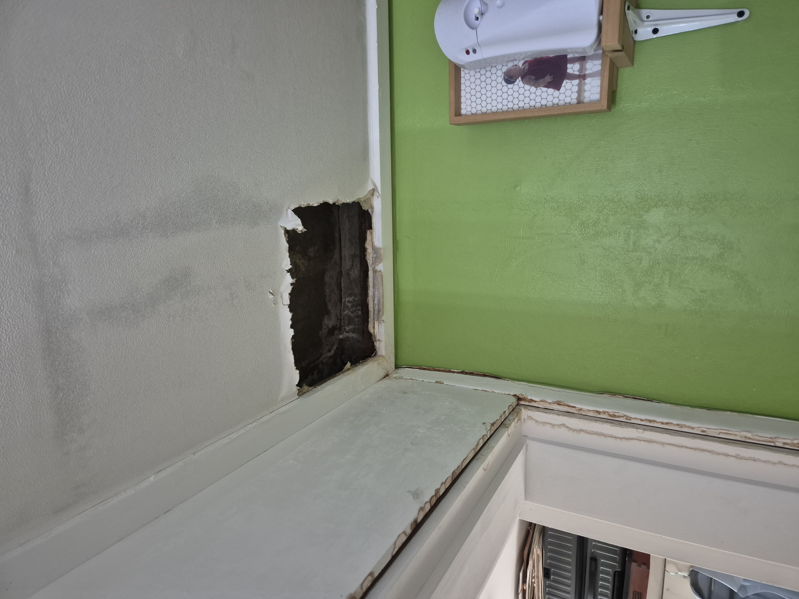
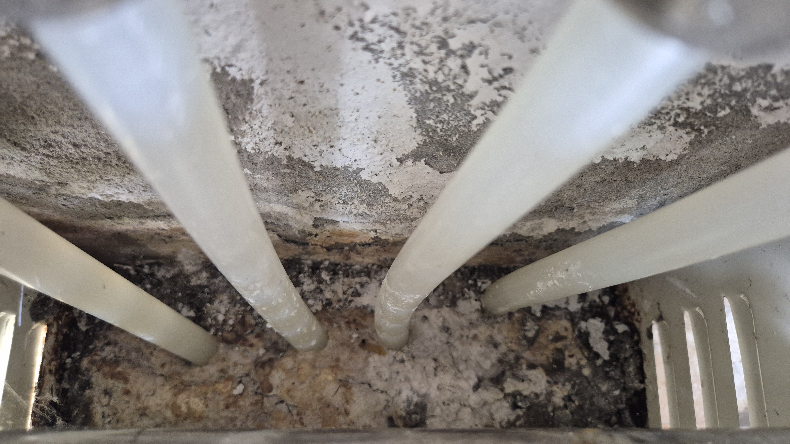
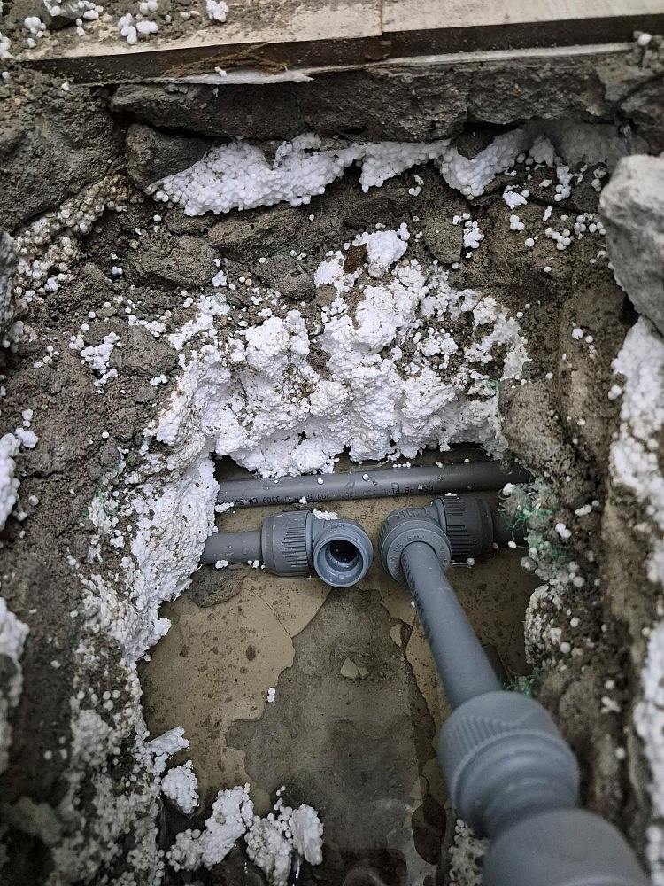
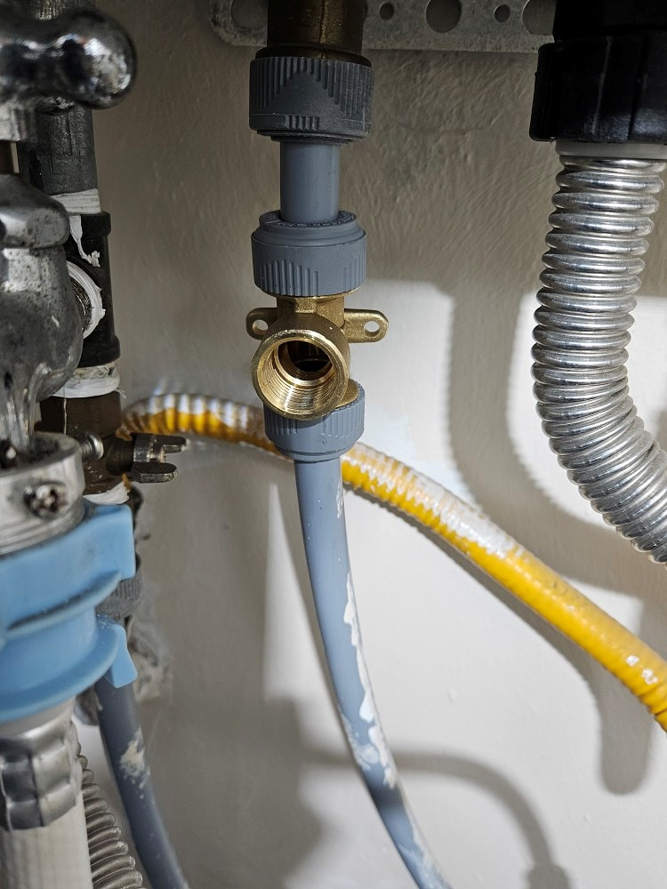

짐작으로 배관을 뜯지 않습니다.
압력 수치와 탐지 장비로 원인을 좁히고,
꼭 필요한 구간만 최소한으로 시공합니다.
천장에서 물이 새거나 하수구가 막혀 불안하셨던 적 있으신가요? 강동구 누수는 내 집처럼 꼼꼼하게 문제를 들여다봅니다.
감이 아니라 압력검사, 청음탐지, 가스탐지로 원인을 수치와 데이터로 확인하며, 그 결과 높은 문제 해결률로 지역 주민들의 신뢰를 얻고 있습니다.
육안 점검에 그치지 않습니다. 디지털 압력게이지, 청음식 탐지기, 가스 탐지기, 관로 내시경 카메라까지 갖춰 원인을 정확히 짚어냅니다.
숨은 누수탐지와 배관공사는 물론, 고질적인 하수구 막힘과 고압세척까지 한 번의 방문으로 해결합니다.
한 번 맡긴 고객이 다시 찾는 이유가 있습니다. 정직한 진단과 꼼꼼한 마감으로 쌓아온 평판입니다.
전화나 온라인으로 증상을 먼저 확인하고, 방문 가능한 시간을 안내해 드립니다.
압력검사로 문제 구간을 좁히고 청음·가스탐지를 함께 진행해 정확한 위치를 특정합니다.
감이 아닌 수치와 탐지 반응으로 원인을 확정해 불필요한 굴착을 막습니다.
필요한 구간만 절개하고 보양작업을 병행해 생활 불편을 최소화합니다.
2차 압력테스트로 재발 여부까지 확인하고, 필요시 보험처리 절차도 안내합니다.

세대별 계량기부터 확인한 뒤 냉온수 압력검사로 냉수배관 이상을 잡아냈고, 가스·내시경 탐지로 부속 없이 꺾어 시공된 배관의 균열을 찾아 수리했습니다.

공압검사로 온수배관 구간을 좁히고 가스·청음탐지로 세탁실 바닥 T부속 두 곳의 누수를 확인해 조치했습니다.

온수배관을 의심해 압력·가스·청음탐지를 함께 진행, 보일러실과 싱크대 사이 구간에서 원인을 찾아 부분교체했습니다.

윗집 보일러 아래 하수배관 쪽 에어컨 드레인호스 파손을 확인하고 부품교체 및 노후 호스까지 함께 정리했습니다.
강동구를 중심으로, 서울과 경기 양쪽에서 빠르게 출동합니다.
정확한 진단부터 시작합니다.